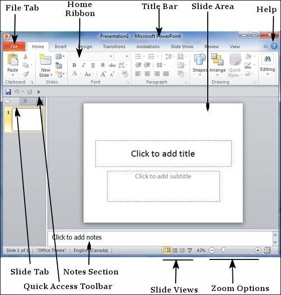

Explore Windows in Powerpoint 2010

- File Tab. This tab opens the Backstage view which basically allows you to manage the file and settings in PowerPoint. ...
- Ribbon. The ribbon contains three components − ...
- Title Bar. This is the top section of the window. ...
- Slide Area. ...
- Help. ...
- Zoom Options. ...
- Slide Views. ...
- Notes Section.